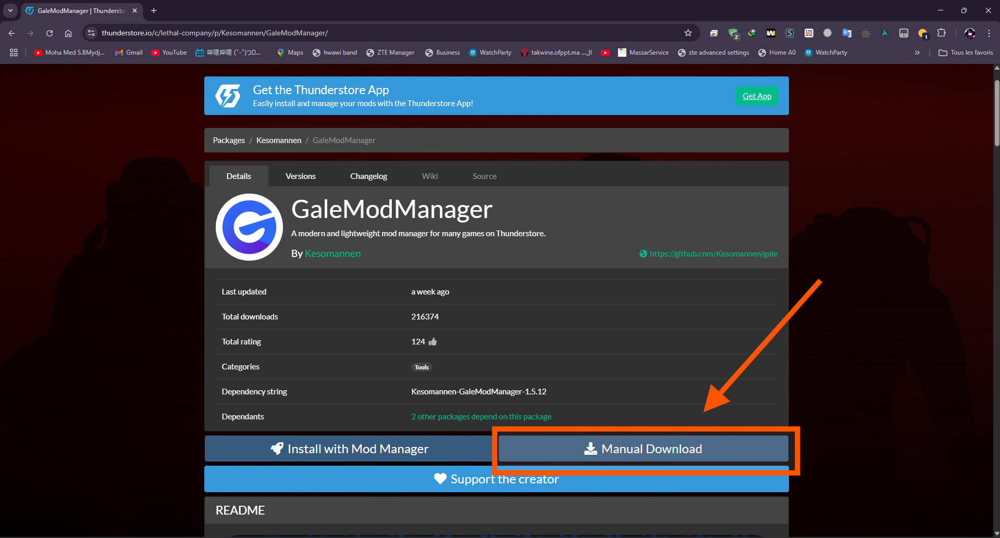
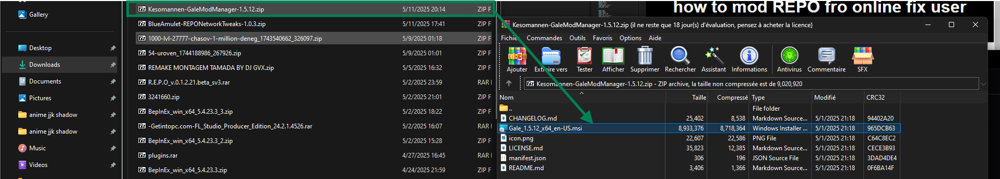
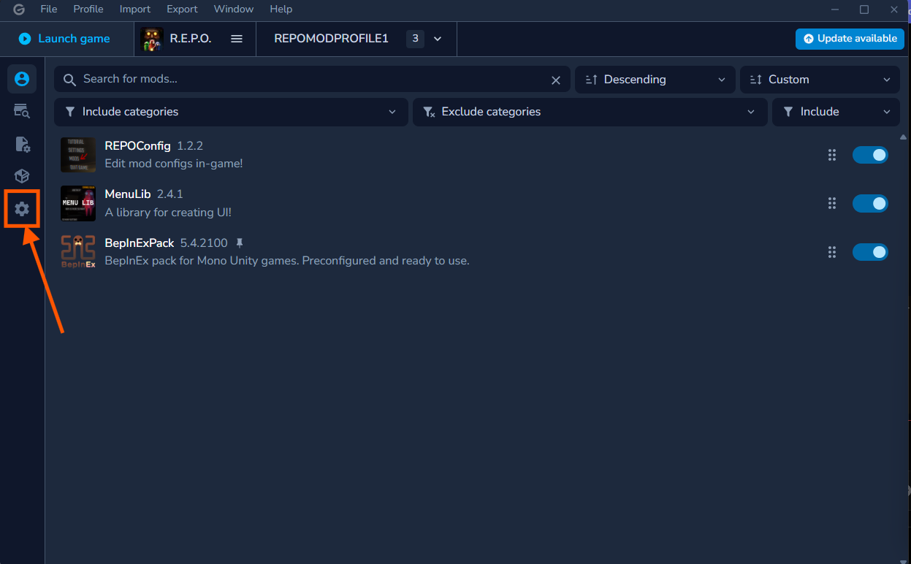
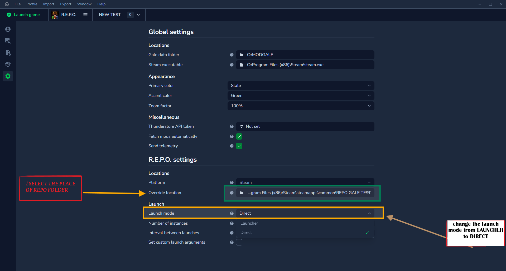
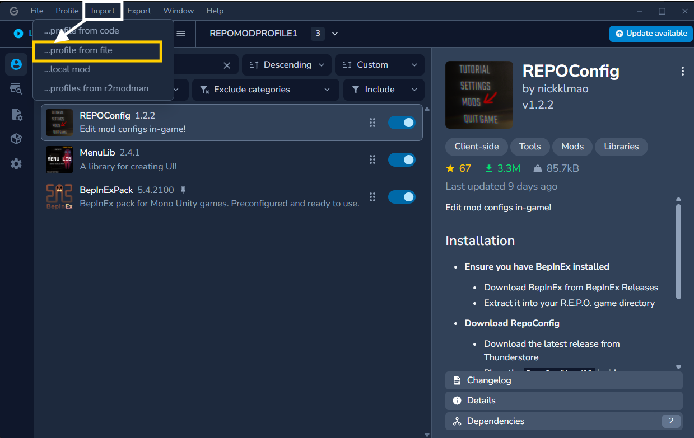
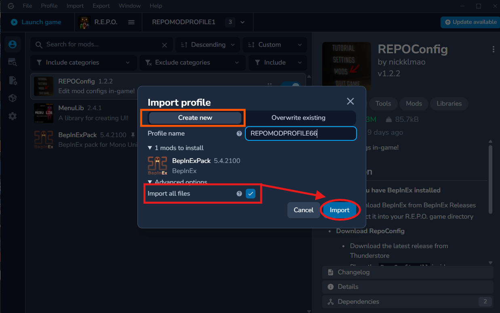

how to mod REPO fro online fix user
Part 1: Download gale mod manager
Step 1: Open the following link of thunderstore
Click on download manual "open archive and setup it". Open the link
GaleModManager  Step 2: open gale app and settings up following things'
On the left sidebar, click on settings icon .
Step 3: Click on 'Manage settings'
1•override location which is select the folder of where your repo folder exist
2•change launcher mode from launcher to direct
Manage settings below in picture shown Step 4:import the preset of profile
1•above you see import option click on it
2•click profile from file and choose the file
notice:file is in following link here •as shown in pics when the second window show click
create new name it whatever... and click advanced option check that import all files and import last step: download any mod you want from second market icon
thats all enjoy your game section and click Add or remove exclusions.